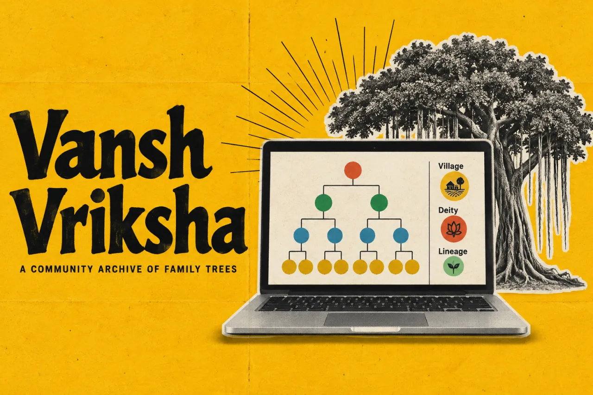

Vansh VrikshaProduct story · 4 min read
Family connections with a source to follow.
A community genealogy archive that treats relationships, provenance, and contribution review as parts of the same experience.
Read the case study

The original archive interface introduces people, families and the connections between records.
View full size ↗01 The problem
How can an archive invite contribution without pretending every claim is settled?
A family archive is not simply a diagram of names. Relationships can be disputed, spellings vary, and historical records represent some people much better than others. Vansh Vriksha is structured around exploring those connections while preserving the basis for a record.
Designed for Family member exploring a connection. Understand a relationship and the evidence behind it.
User context Design assumption
Following names and relationships with incomplete historical information.
- The friction
- A convincing diagram can imply certainty or completeness.
- Design implication
- Keep sources and contribution review near the record.
Example situation · illustrative scenario. Imagine recognising a relative in an archive and wanting to know how the relationship was recorded. The diagram can show a connection, but it also needs a basis you can inspect.
02 The direction
A connection needs a source
Provenance belongs with the relationship. A family graph, versioned records, and review make different parts of that promise concrete.
Product artifact · graph and review model
My direction. I connected exploration with source-aware records and a contribution path that separates submitting from publishing.
Process and product scope
I treated the archive as a set of connected records with several entry points: a person, a family, a village, or a relationship. The UX should help someone follow a connection without losing its source.
The demonstration content lets the experience be explored; it is not verified family evidence. Missing records, uncertain relationships, and contribution review need visible explanations.
- Graph
- relationship model
- Provenance
- per-record intent
- Reviewed
- contribution workflow
- Explore
Follow the connections through the archive.
- Inspect
Read the basis for a record.
- Contribute
Submit a correction or a family link.
- Review
Publish after a maintainer’s review.
03 Design decisions
Keep the evidence behind a relationship visible.
Open a decision to see the reasoning and trade-off.
01Model relationships beyond a simple tree
The graph includes family unions and parent links rather than forcing every connection into one hierarchy.
Why this matters. A plain tree can misrepresent remarriage and half-sibling relationships. The data model needs to preserve the actual relationship.
The trade-off. A more faithful model is harder to lay out and explain, especially on small screens.
02Keep a record’s basis alongside the record
The documented model includes provenance and versioned family files.
Why this matters. Someone reading a family claim should have a way to understand where it came from and how it changed.
The trade-off. A source field does not guarantee accuracy. Disagreement and corrections still need a human review process.
03Separate contribution from publication
Visitors can submit without an account, while a maintainer reviews additions.
Why this matters. A low-friction contribution path can coexist with an accountable published archive.
The trade-off. Moderation becomes an operational commitment; the interface should communicate what happens while a submission waits.
04 The outcome
A family connection with its context intact.
I designed relationship browsing, record context and contribution review as connected parts of the archive. A person can explore a connection and inspect the basis for it. The demonstration records show the interaction; they do not establish verified family histories.
More about the experience
- Multiple ways into a family history. The public experience offers search and relationship exploration.
- Coverage stays conditional. Demonstration records and historical coverage limits need context.
05 Reflection
An archive should show what it knows and how it came to know it.
I would make gaps in the archive easier to recognise. A missing branch can mean incomplete records, so it should not quietly look like a statement about which families or people matter.
What I would evaluate next proposed work
- ask a family contributor to submit a relationship, inspect its provenance, and correct a disputed connection.
- distinguish demonstration records from sourced records in every public count and assess living-person privacy across search and sharing.
A bank message is not always a clean transaction.